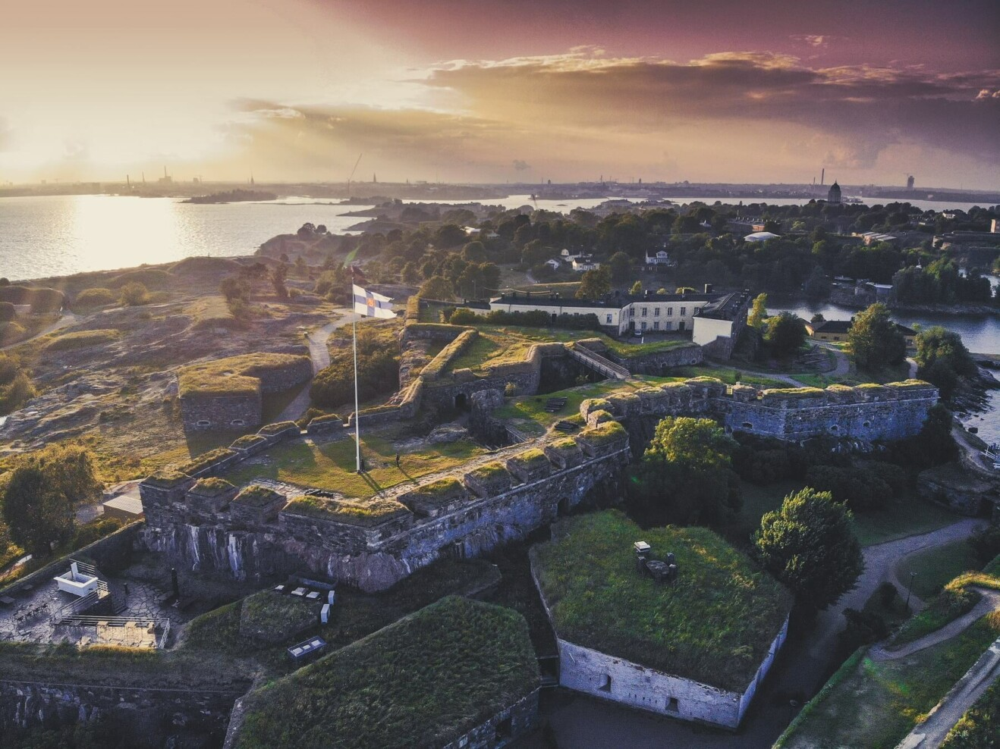
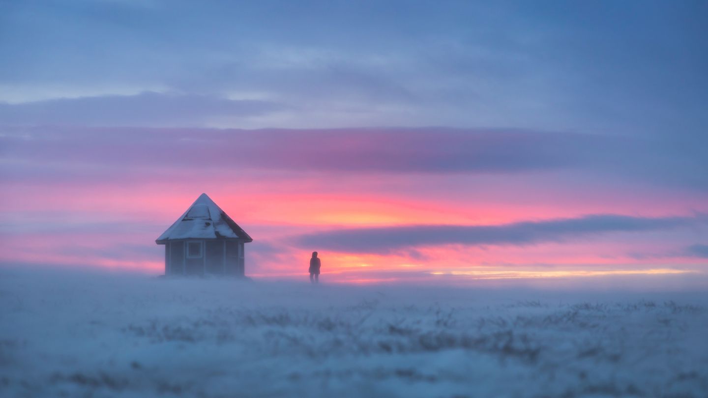
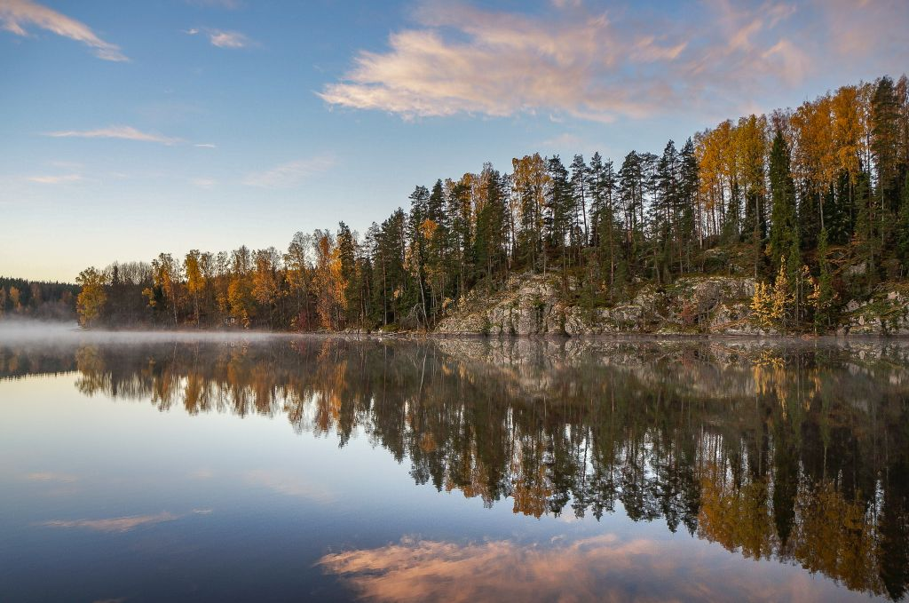
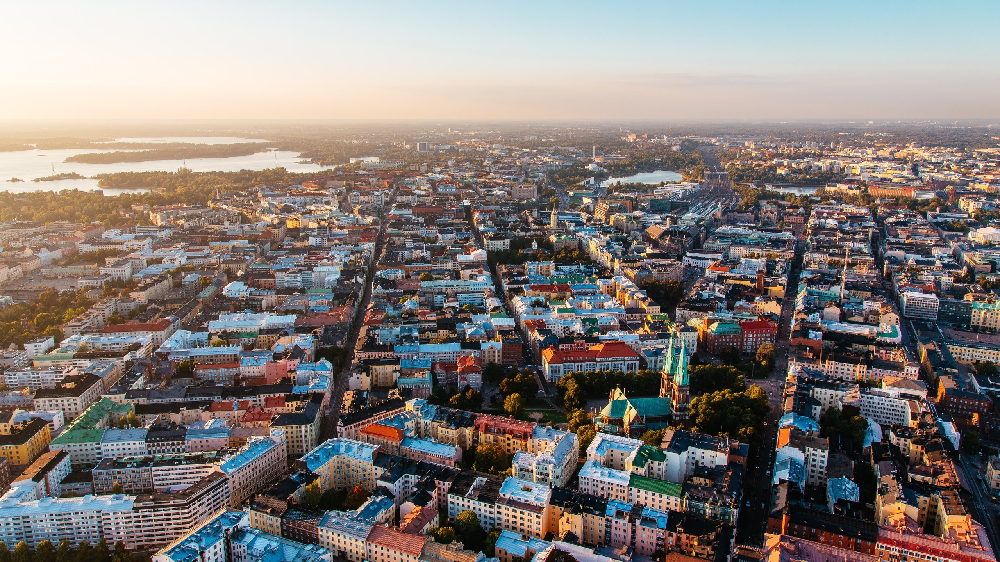
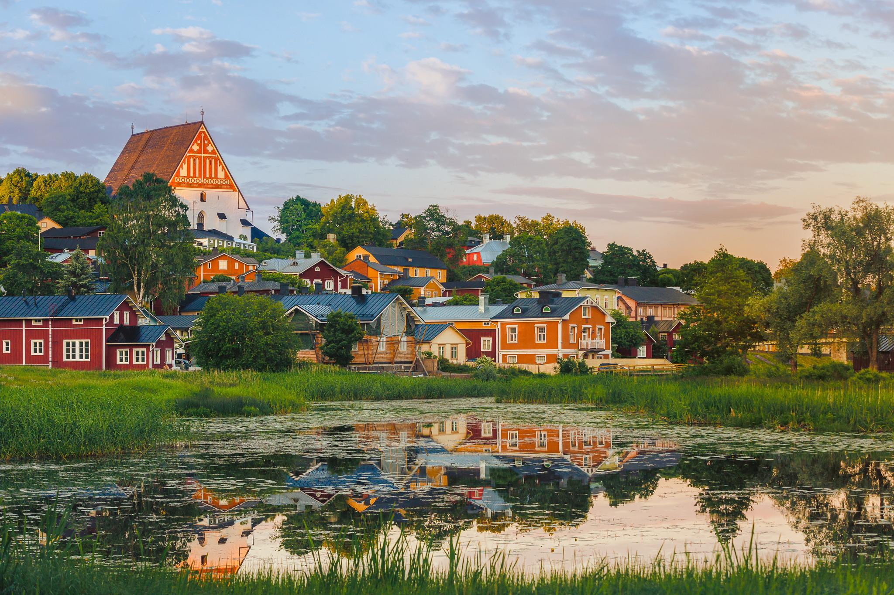

Sights of Finland
1. Suomenlinna
Suomenlinna is a Unesco World Heritage site and one of the most popular tourist attractions in Finland. Visitors are not charged an admission fee – you only need to pay for the ferry crossing. Suomenlinna is also a borough of Helsinki.
2. Lappi
Lapland is a destination above ordinary, full of contrasts and unique natural phenomena: Midnight Sun, Polar Nights, autumn colors, Northern Lights, and Arctic cites nestled among Ice Age fells.
3. Nuuksio
Within easy reach of the Finnish capital you can escape into wild natural settings and enjoy typically Finnish scenery, with lovely lakes, green forests and rugged crags. Pack your backpack for a memorable family picnic or campout. The nearby Finnish Nature Centre Haltia spotlights the best of Finland's natural treasures from across the country.
4. Helsinki
Helsinki is a totally unique combination of quirky urbanity and peaceful nature that gives silence and space to feel more, hear more and experience more. It offers you the freedom to have it all.
5. Porvoo
Porvoo's centre opens up to a national urban park, in which beautiful views and natural attractions are available for everyone by foot, bike or paddling on a SUP board. In winter, you can go cross-country skiing, ice-fishing or downhill skiing.